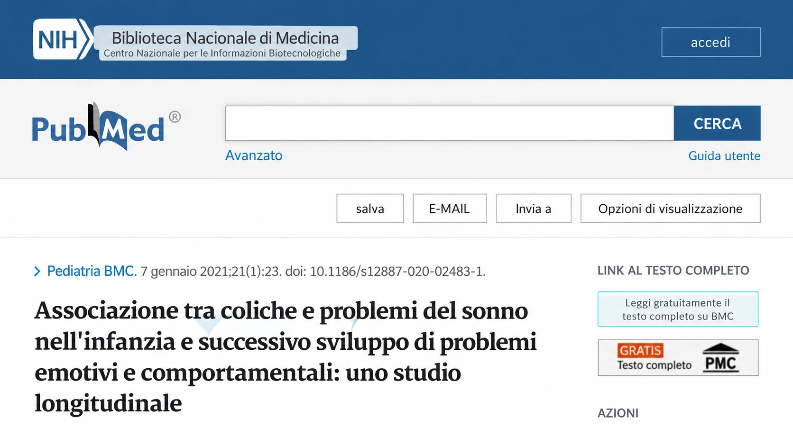
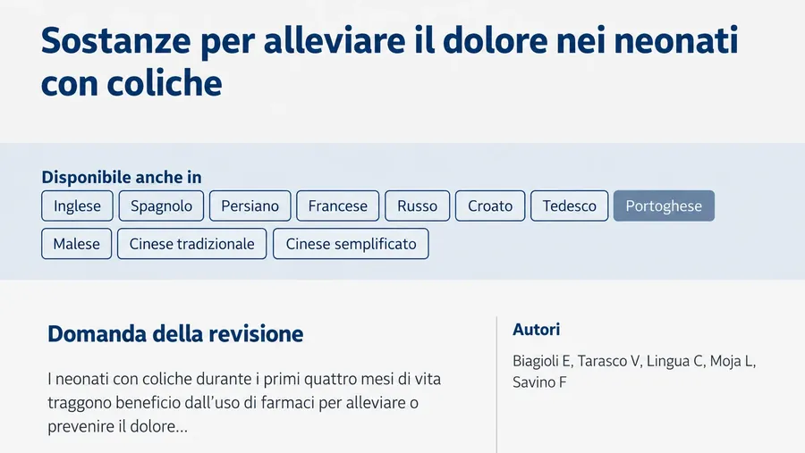
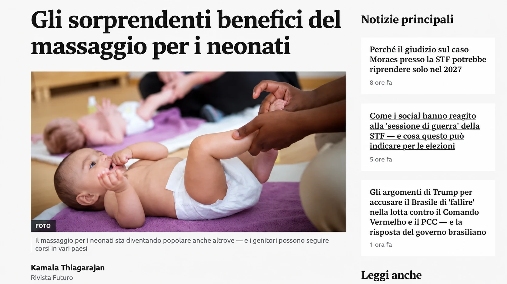

quando il pianto si ripete
"Passerà" non aiuta quando sta piangendo tra le tue braccia.
Conosci già questa scena. Raccoglie le gambine, spinge, diventa rosso. Lo prendi in braccio, provi a fargli fare il ruttino, cammini per casa. Il pianto continua.
Le gocce non sono servite. Qualcuno dice che "è normale, passerà". Ma chi attraversa la notte con lui in braccio sei tu.
E, nella stanchezza, arriva la domanda: "Sto sbagliando qualcosa?" Il suo pianto non fa di te una cattiva mamma.
Il Protocollo Bebè Tranquillo è stato creato perché tu abbia un punto di partenza: una guida illustrata con 9 movimenti, che mostra dove mettere le mani, come seguire la sequenza e quando fermarti.
Voglio capire il passo dopo passo →

